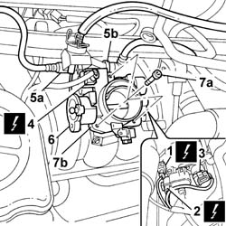

1056B15 THROTTLE BODY INTERGRAL WITH MDS - R R
- Path
- Procedures > 10 ENGINE > 1056 PETROL INJECTION SYSTEM > 1056B MULTI-POINT INJECTION SYSTEM (MPI) > 1056B15 THROTTLE BODY INTERGRAL WITH MDS - R R
- Kind
- repair procedure (removal / refitting; the operation number is the code)
- Applies to
- engines: 2.0 16v; all production periods
- Interactive page
- https://sloeber94.github.io/elrnDB-fUlss/en/#/179007032
Applies to: engines: 2.0 16v; all production periods
 Removing
Removing
 Refitting
RefittingOp. 5530B56 BATTERY DRIP TRAY COVER - R.R.
- Disconnect the negative battery terminal.
Op. 1048A39 SLEEVE FROM AIR CLEANER TO RIGID PIPE - R R
Op. 1048A31 RIGID PIPE CONNECTING AIR CLEANER TO INLET MANIFOLD RIGID PIPE R R
1. Disconnect the electrical connection for the air temperature sensor.
2. Disconnect the electrical connection for the throttle position sensor.
3. Disconnect the electrical connection for the engine idle speed adjustment actuator.
4. Disconnect the electrical connection for the resistive pad heater.
5. Disconnect the rapid connector for the fuel vapour return pipe (5a) and the rapid connector for the pipe connected to the oil vapour separator (5b).
6. Release the accelerator cable and move it aside.
7. Undo the fixing bolts (7a) and remove the throttle casing (7b).

Applies to: engines: 2.0 16v; all production periods
Refitting
Removing- Fit the throttle casing with built in M.D.S. in the housing.
- Tighten the bolts fixing the throttle casing to the intake manifold.
- Fit the accelerator control cable.
- Connect the rapid connector for the pipe coming from the oil vapour separaator and the rapid connector for the fuel vapour return pipe.
- Connect the electrical connection for the resistive pad heater.
- Connect the electrical connection for the engine idle speed adjustment actuator.
- Connect the electrical connection for the throttle position sensor.
- Connect the electrical connection for the air temperature sensor.
Op. 1048A31 RIGID PIPE CONNECTING AIR CLEANER TO INLET MANIFOLD RIGID PIPE R R
Op. 1048A39 SLEEVE FROM AIR CLEANER TO RIGID PIPE - R R
- Connect the negative battery terminal.
Topics linked from this page (3)
- 1048A31 RIGID PIPE CONNECTING AIR CLEANER TO INLET MANIFOLD RIGID PIPE R R
- 1048A39 SLEEVE FROM AIR CLEANER TO RIGID PIPE - R R
- 5530B56 BATTERY DRIP TRAY COVER - R.R.